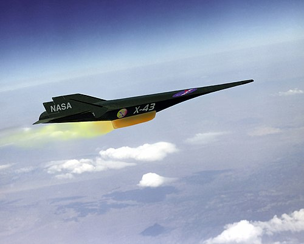

Treno piu veloce la mondo
NASA-X-43A

- Lunghezza: circa 3.7 metri
- Prezzo: 230 milioni di EUR
- Peso: circa 1.360 kg
- Motore: scramjet alimentato da idrogeno liquido
- Lancio: da un razzo Pegasus, a sua volta sganciato da un aereo B-52
- Velocità massima raggiunta: circa Mach 9,6 (7.200 mph o 11.500 km/h)
- Autonomia: volo autonomo di circa 10 secondi, seguito da una discesa controllata di 10 minuti fino all'impatto programmato nell'oceano WIRED
X-43-NASA official account
TORNA ALLA HOME